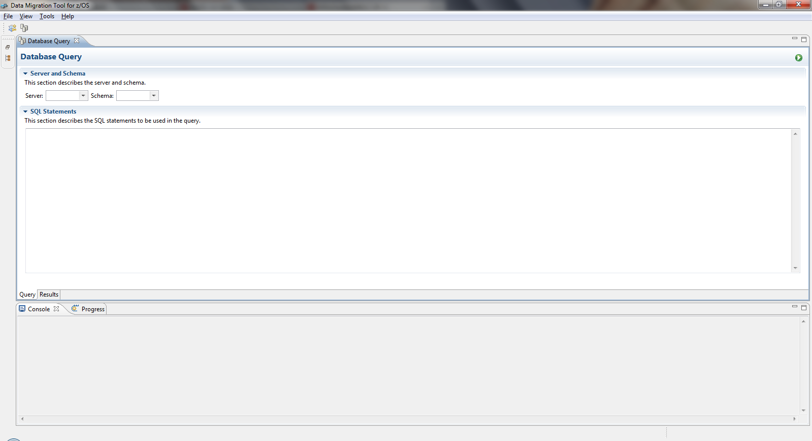

Select the menu File -> New Database Query or the icon on the toolbar to start a batch query. The Query editor will be then presented.

After selecting the server and schema, enter the SQL statements. When everything is ready, click the Run button on the top-right to start the query.